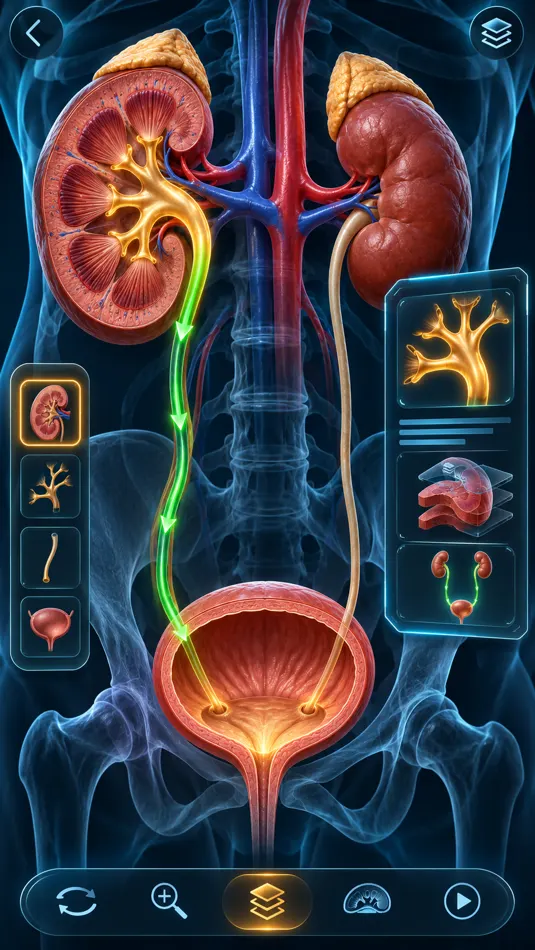
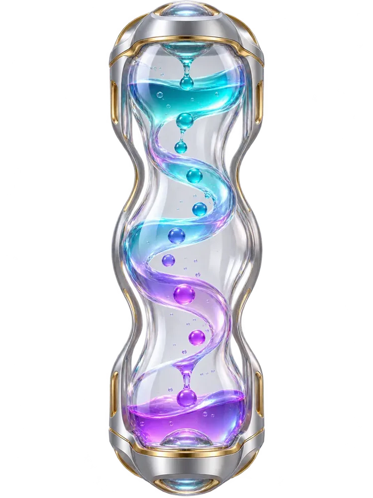

Aprenda anatomia como quem desvenda um mistério.
Apresente as imagens em sequência, navegue por blocos de estudo, investigue estruturas e resolva desafios com correlação clínica.

Como quer estudar hoje?
Slides imersivos
Deslize na imagem ou use as setas para avançar. Amplie para ler os detalhes.
Blocos anatômicos
Explore as imagens por assunto e abra qualquer bloco no modo Slides.
Atlas de estruturas
Localização, explicação anatômica e curiosidade clínica organizadas em nove módulos.
Missão Néfron Vivo
Você está dentro do laboratório renal. Toque em uma partícula e escolha seu destino, ou arraste-a até uma das zonas. Observe a resposta, aprenda a fisiologia e ganhe moedas.

Ilustrações fornecidas para estudo. Os elementos móveis são uma simulação didática, não um modelo 3D com hotspots anatômicos.
Da corrente sanguínea ao filtrado
Filtração glomerular
Escolha uma amostra para começar.
Toque em uma partícula e selecione o destino correto.
✓ Toque ou arraste • ✓ Observe o resultado • ✓ Ganhe moedas • ✓ Avance para a próxima fase
Nenhuma fase finalizada.
Da filtração à eliminação
Toque em cada etapa para acompanhar uma gota didática pelo sistema urinário.

O que atravessa normalmente a barreira glomerular?
Toque nas partículas que fazem parte do filtrado glomerular normal.
A gota animada representa apenas uma jornada pedagógica. As imagens são estáticas e não reproduzem movimentos de líquidos em modelos 3D reais.
Decifre a estrutura
Leia a pista anatômica, identifique a estrutura correta e conquiste moedas.
Qual estrutura corresponde à descrição?
Preparando questão...